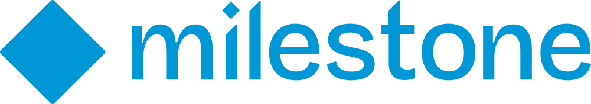
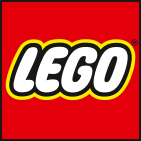

I turn cloud strategy into secure, operable platforms.
Principal Cloud Architect designing AWS and Azure foundations, delivery platforms, and AI/data environments that teams can run with confidence.
Open to senior and lead roles · Available for focused consulting


Agillic Knowit SimpleSiteSelected work
Explore four reproducible public projects alongside three professional case studies. Together they show how I move from architecture decisions and delivery systems to measurable outcomes, with each claim kept within its evidence boundary.
Independent, reproducible systems
Public repositories with reviewable designs, local or CI evidence, and explicit boundaries around what has not been deployed.
Secure Self-Service Cloud Platform
v1.0.0 · stable · simulation onlyDevelopers submit through a portal, API or CLI; policy evaluates the request and produces deterministic evidence for human review. The public release demonstrates the simulation, proposal generation, Terraform validation and protected workflow design. It does not call a cloud API, create resources, or validate a real environment.
- Readable policy feedback across ownership, cost, network, encryption, logging and expiry.
- Deterministic evidence with request IDs, fingerprints, content hashes and expected resources.
- Separate provider roots for AWS and Azure, with protected workflow designs and short-lived OIDC boundaries.
- Credential-free local path covering the portal, API, CLI, proposal generation and validation.
Legacy Application Modernization
Waves 0–3 · local + hosted CI verified · AWS target unappliedA deliberately constrained order service modernized without losing its HTTP contract. The project separates locally verified application behavior from a reviewable AWS target, using a non-root container, operational runbooks, and plan-only Terraform rather than implying a deployment.
- Preserved /v1 behavior with validation, idempotency, ownership, transitions, reports and safe error envelopes.
- Runtime hardening through non-root, read-only container behavior, health/readiness boundaries and immutable image input.
- Operational seams for PostgreSQL, JWT, SQS, S3, telemetry, graceful shutdown and recovery runbooks.
- Deterministic evidence covering tests, container acceptance, Trivy, SBOM, PostgreSQL integration and backup/restore.
Secure URL Shortener Platform
v0.1.0 · local + CI verified · AWS target unappliedA local-first URL shortening service with explicit ownership, lifecycle and resolver boundaries. The public v0.1.0 release verifies the local Compose/PostgreSQL lifecycle, Terraform validation, pinned multi-platform images and CI evidence; it has no public endpoint and no applied AWS environment.
- Secure lifecycle with custom/random aliases, expiry, disable, tombstone deletion and no code reuse.
- Destination safety through HTTP(S)-only validation, DNS checks and rejection of private or metadata addresses.
- Bounded resolver with safe click metadata, no client IP/user-agent storage and explicit 302/404/410 semantics.
- Reviewable delivery design with Terraform validation, CI quality/security gates and no AWS apply or endpoint claim.
Secure Container Delivery & GitOps
GitOps v0.1.0 · local Docker Desktop verified · image v0.1.3 publishedTwo repositories make the ownership boundary visible: the application repository tests, scans and publishes an immutable multi-architecture image; the GitOps repository owns reviewed Kubernetes desired state and Argo CD reconciliation to a Docker Desktop cluster. This is verified locally, not a managed-cloud or production deployment.
- Application repository owns tests, non-root image build, vulnerability scanning and multi-architecture GHCR publication.
- GitOps repository owns reviewed manifests, Kustomize overlays, probes, security context, NetworkPolicy and Argo CD reconciliation.
- Immutable hand-off uses the published digest rather than a moving tag.
- Operational evidence includes a diagnosed broken image, Git revert recovery, rollout checks and endpoint verification on Docker Desktop.
Application repository → · GitOps repository → · Read architecture docs →
Architecture in production contexts
Detailed engagements showing the systems, operating models, and outcomes behind the work.
Project Hafnia — Visual AI & Data Insights Platform
Milestone Systems × NVIDIACloud architecture lead for a Milestone × NVIDIA collaboration enabling visual AI model development on annotated, regulation-compliant video data. Owned from concept through production deployment as the primary architecture authority.
- Enterprise AI/data platform on AWS and Azure for building, training and operationalising visual AI models.
- Multi-account AWS foundation — Organizations, Control Tower, centralised logging and cost governance.
- Secure hybrid integration between on-premises infrastructure and AWS for reliable, controlled data movement.
- ML enablement via SageMaker and Kinesis Video Streams, plus large-scale ingestion, annotation and training pipelines.
- AWS partnership initiative contribution involving a forthcoming AWS service planned for public release.
Distribution Centers Hub Platform
LEGOCloud infrastructure and automation for LEGO's distribution centre platform — Infrastructure as Code, CI/CD and Kubernetes operations, with the emphasis on deployment reliability. In a logistics context a failed release is not an inconvenience; it is pallets not moving.
- Terraform-managed AWS infrastructure enabling repeatable, reliable environment provisioning.
- CI/CD with GitHub Actions and Argo CD, cutting manual deployment effort substantially.
- Containerised workloads on Amazon EKS, packaged and configured with Helm.
- IAM hardening plus Sysdig and PagerDuty for monitoring and incident response.
Cloud Modernisation, Migration & Operations
AgillicA full reshaping of the cloud operating model for a production SaaS business — migration, automation, monitoring, security and disaster recovery. The headline saving came from architecture redesign rather than tactical right-sizing, with performance improving at the same time.
- 85% reduction in operational cost through AWS architecture redesign, with performance and scalability gains.
- AWS migrations for business-critical systems including IBM SPSS Modeler and content delivery workloads.
- Multi-account governance with Organizations and Control Tower for compliance and operational control.
- Disaster recovery patterns and automated CI/CD delivered via Terraform and GitLab CI.
What I'm brought in to do
Engagements typically start with an assessment, produce a clear set of architecture decisions, and end with something running. I work AI-assisted throughout, which mostly shows up as pace.
Cloud Architecture & Strategy
Target-state architecture for AWS and Azure: solution design, cloud strategy, technology selection, and the decision records that keep teams aligned six months later.
Landing Zones & Multi-Account Foundations
AWS Organizations, Control Tower, account strategy, centralised logging, guardrails, tagging standards and cost governance built in from day one.
Cloud Security & Governance
Security by design: IAM and Entra ID models, network segmentation, secrets management, AWS Config and CloudTrail, plus compliance-focused operating practices.
Migration & Modernisation
Assessment, migration planning and execution for business-critical workloads — plus re-platforming and refactoring toward genuinely cloud-native operation.
Platform Engineering & DevOps
Terraform, CDK, Bicep and CloudFormation; CI/CD with GitHub Actions, GitLab CI, Azure DevOps and Argo CD; Kubernetes and EKS workload platforms teams enjoy using.
AI & Data Platform Enablement
Large-scale ingestion, streaming pipelines, annotation and labelling workflows, data governance, and ML training platforms on SageMaker and Kinesis Video Streams.
FinOps & Cost Optimisation
Spend analysis, right-sizing, architecture-level cost redesign and governance so savings hold after the engagement ends. Previously delivered an 85% ops cost reduction.
Observability & Operational Readiness
CloudWatch, Grafana, ELK, Datadog and Sysdig; SLOs, alerting, incident response and disaster recovery patterns that hold up under real load.
Strategy on one side, working systems on the other.
- Clear decisionsMake trade-offs explicit and reviewable.
- Operable systemsDesign for the team after handover.
- Accountable deliveryUse speed without outsourcing judgment.
At a glance
- Based
- Copenhagen · London
- Focus
- AWS & Azure architecture
- Availability
- Senior / lead roles & consulting
- Work authorisation
- DK & UK — no sponsorship needed
- Education
- MSc Cloud Computing
- Languages
- Arabic (native) · English (fluent) · Danish (beginner)
Career timeline
From infrastructure engineering to principal-level cloud architecture — 15 years, four countries.
Cloud strategy, solution design and secure platform delivery across AWS and Azure, with current work focused on reliability, automation, cost efficiency and governance gaps.
Architecture authority for Project Hafnia, the Milestone × NVIDIA visual AI data platform, taking the collaboration from concept through production deployment.
Senior cloud architect supporting the early architecture, design and implementation of Project Hafnia for client Milestone Systems. The dates overlap with the role above because I continued on the same project after moving from consultancy to Milestone directly.
Infrastructure as Code, CI/CD and Kubernetes operations for the Distribution Centers Hub platform, with deployment reliability as the central outcome.
Led AWS modernisation, migration, governance and disaster-recovery work across production SaaS environments, delivering an 85% operational cost reduction.
Built the operating foundation across Windows Server and Linux administration, Active Directory, SharePoint, DNS, infrastructure, backup and disaster recovery, while teaching IT and computing along the way.
Verified across both major clouds
Fourteen AWS and Microsoft certifications. Three sit at professional or expert level — the tier that requires demonstrating architecture judgement rather than service knowledge.
The senior AWS architecture credential — multi-tier, multi-account design under real cost and compliance constraints.
Provisioning, operating and managing distributed systems, with CI/CD and automated governance at its core.
The equivalent expert-level Azure credential, covering identity, networking, storage and compute strategy.
Verify every badge on Credly →
Technical toolkit
Depth in AWS and Azure, with the platform, security and automation layers that turn architecture into something deliverable.
Cloud & Architecture
AI / Data Enablement
DevOps & Platform
IaC & Automation
Security & Governance
Observability & Operations
Let's talk architecture
Open to senior and lead cloud architecture roles in Denmark and the United Kingdom, and to consulting engagements. No sponsorship required.